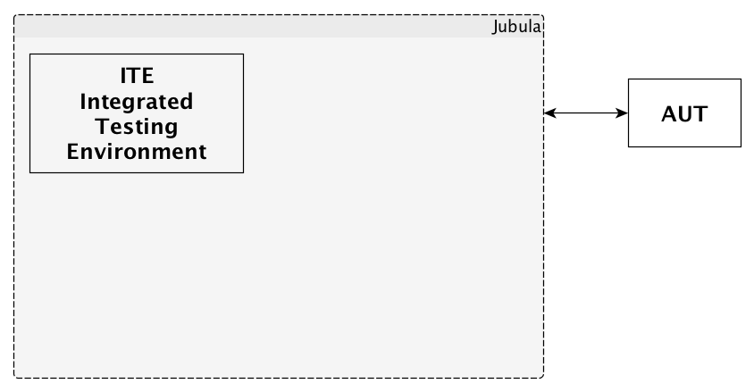
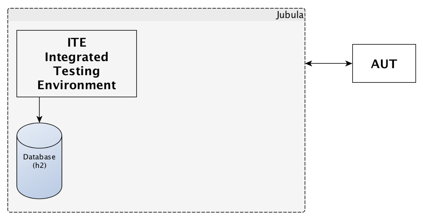
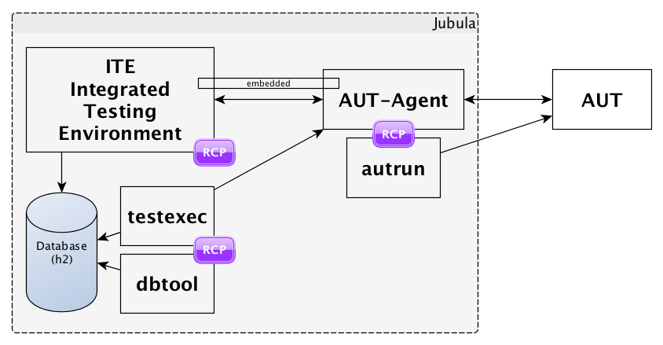
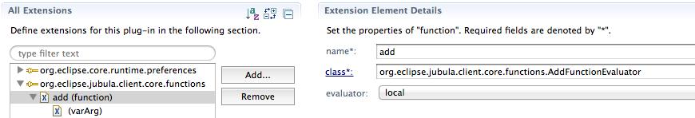

To ∞ and beyond
... making Jubula surpass its limits
by @MarkusTiede - BREDEX GmbH
Agenda
What's Jubula?
How & where to extend it?
That's Jubula!

UI automation @ eclipse.org/jubula since 2011
Jubula - the big picture
Jubula - the big picture
Jubula - the big picture
Jubula - the big picture
Jubula - the big picture
Disclaimer
Testing with Jubula does not require programming skills
... but extending Jubula does require programming skills!
Extending Jubula
(1) Use existing extensions
(2) Write your own extensions
(3) Build your own Jubula
Extending Jubula
(1) Use existing extensions
(2) Write your own extensions
(3) Build your own Jubula
(1) Use existing extensions
(2) Write extensions
Setup IDE with Jubula as target platform
Write your own bundle / fragment
Make use of extension points
Deploy into RCP application
(3) Building Jubula
Clone git repository
Setup IDE& modify sources directly
[~/git/org.eclipse.jubula.core] $ ant
Buildfile: ~/git/org.eclipse.jubula.core/build.xml
cleanBuild:
<..>
BUILD SUCCESSFUL
Total time: 4 minutes 1 secondbuild on commandline via ant / maven / tycho
update from local p2-repo org.eclipse.jubula.site/target/repository/
Extending
Extending the ITE
Extending the ITE
Write custom test data functions
Write your own test reports
Write your own test style rules
Add your own unbound_modules_*
Support more keyboard layouts
Support more ALM repositories
Support other databases
...
test data functions
dynamic test data computation during test execution
test data functions
Use extension point: org.eclipse.jubula.client.core.functions
Implement interface
o.e.jubula.client.core.functions.IFunctionEvaluator
public String evaluate(String[] arguments)
throws InvalidDataException;test reports
test reports
use Eclipse BIRT Designer Version 2.6.2
make use of our library: iteLIB.rptlibrary
ITE-installDir/jubula/plugins/com.bredexsw.guidancer.
reporting.birt.viewer_qualifier/reports
re-use data sources / -sets and reports
deploy to that directory to "install"
recommended: setup central BIRT viewer instance
test style rules
test style rules
Use extension point: org.eclipse.jubula.client.teststyle.definition
Derive from class:
o.e.jubula.client.teststyle.checks.BaseCheck
// implement
public boolean hasError(Object obj);unbound_modules_*
pre-defined test case library
unbound_modules_*
write a fragment for bundle: org.eclipse.jubula.client.ui.rcp
provide a file beginning with "unbound_modules_"
located under: resources/library
--> auto-import on new database scheme
keyboard layouts
RCP AUTs require keyboard mapping files
de_DE & en_US are already pre-defined
keyboard layouts
RCP AUTs require keyboard mapping files
de_DE & en_US are already pre-defined
keyboard layouts
write a fragment for bundle: org.eclipse.jubula.client.core
provide a properties file named <lang>_<COUNTRY>.properties
located under: resources/keyboard_mapping
provide special character mapping
...
"=shift+2
§=shift+3
$=shift+4
%=shift+5
&=shift+6
...ALM repositories
built-in support for trac, JIRA & Bugzilla
based on Mylyn connectors
database types
database types
JPA / EclipseLink used for database persistence
potientially much more databases compatible
write your own: o.e.jubula.client.core.preferences.database.
AbstractHostBasedConnectionInfo
provide JDBC driver
build Jubula on your own
Extending the ITE
Extending the AUT-Agent, RC & AUT
Extending the AUT-Agent, RC & AUT
Improving UI-widget recognition in Swing, SWT, HTML, iOS
Improving GEF testing by enhancing the identifier
Adding support for custom monitoring agents
Supporting your own components, actions and toolkits
...
Improving UI-widget recognition
set unique IDs for UI widgets in your AUT
Improving UI-widget recognition
has to be implemented within the AUT itself
Swing: setName(ID)
SWT / RCP: setData("TEST_COMP_NAME", ID)
HTML: set / use id attribute id="ID"
iOS: UIAccessibilityIdentification Protocol
@property(...) NSString *accessibilityIdentifierImproving GEF testing
within FigureCanvas regexp based tree-path is used
by default no real semantic (type + index)
Improving GEF testing
provide adaption from: org.eclipse.gef.EditPart
to: o.e.jubula.rc.rcp.e3.gef.identifier.IEditPartIdentifier
make use of extension point: org.eclipse.core.runtime.adapters
talk at ECE 2012
Custom monitoring agents
built-in support for JaCoCo
Custom monitoring agents
built-in support for JaCoCo
Custom monitoring agents
(1) write extension for ITE: o.e.jubula.toolkit.common.monitoring
provide AUT-configuration relevant information
Custom monitoring agents
(2) write extension for AUT-Agent: o.e.jubula.autagent.monitor
provide technical realization

Supporting custom components
(sometimes) necessary to extend / modify / rewrite UI widgets; e.g.

Many ways of extending – support for:
(1) custom actions for existing components
(2) custom components for existing toolkit
(3) custom (not-yet-built-in) toolkits
Supporting custom components
(1) write extension for ITE: o.e.jubula.toolkit.common.toolkitsupport
information about type-system and supported CAPs
Supporting custom components
(2) provide fragments for RC bundles in AUT-Agent
provide toolkit dependent technical realization
talk at ECE 2012
More information...
Extension API Manual
Jubula Forum
Jubula Developer Mailing List
When you're done think about...
contributing!
Thank you! - Q&A?